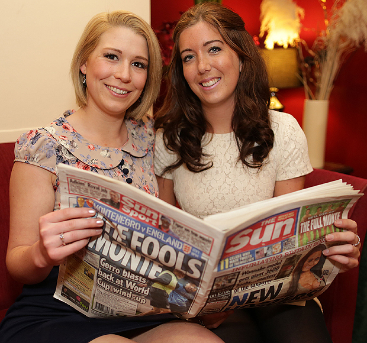
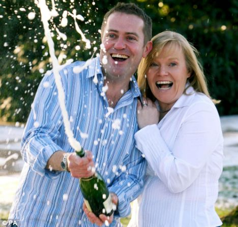

Benne volt a csillagállásban
Carly Wiggett és Becky Witt jó barátnők, és amikor Carly anyukája felolvasta nekik a horoszkópjukat, mely azt jósolta, hogy a Halak és a Bika összefogása lottó nyereménnyel járhat, akkor meg is vették az EuroMillions euro lotto szelvényüket arra a hétre. Ez a számsoruk 168.813,80 eurót hozott nekik a konyhára. Nézze meg e havi lottóhoroszkópját, hátha talál benne érdekes számokat!
Ki akar milliomos lenni?
A tradíciók ápolása, és a pozitív gondolkodás szép dolog - és néha jövedelmező is -, ahogy ezt Mark és Trina Myatt esete is bizonyítja. A házaspár - szokásához híven -, minden szilveszterkor a "Who wants to be a Millionaire?" (Ki akar milliomos leni?) táblás játékkal játszik, és persze előtte euró lottó szelvényeket is megjátszanak. Ez alkalommal a szerencse tényleg rájuk vetette a boldogító mosolyát, 1.014.308 £-ot nyertek másnapra - micsoda Új Évet kezdhettek el!
